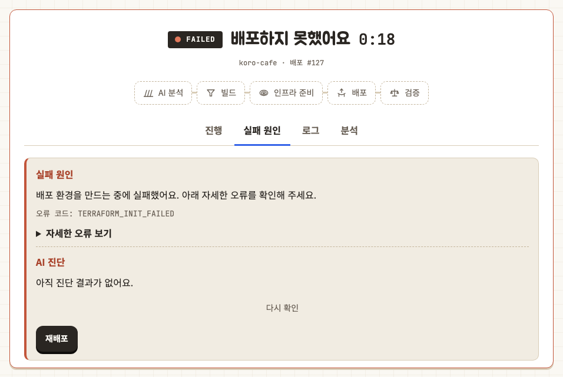

08
Technical Challenges
배포 완료 오판
문제 Terraform과 ECS 명령은 성공했지만 새 컨테이너가 아직 요청을 받을 수 없는 상태가 있었습니다.
해결 이번 배포가 생성한 Task Definition을 기준으로 ECS rollout을 추적하고, 새 컨테이너의 URL이 연속으로 응답할 때까지 별도로 확인했습니다.
공개 URL 전환 실패
문제 새 컨테이너는 정상이지만 사용자가 접속하는 고정 URL이 새 환경으로 연결되지 않는 경우가 있었습니다.
해결 새 환경을 먼저 확인한 뒤 origin을 전환하고, 고정 URL을 다시 확인했습니다. 실패하면 기존 origin으로 자동 복구했습니다.
DNS 반영 지연
문제 새 주소가 준비되기 전에 발생한 DNS 실패가 캐시되어, 서비스 실행 후에도 외부 접속 확인이 늦어졌습니다.
해결 DNS 설정 완료와 외부 DNS 조회 가능 상태를 분리하고, 외부에서 조회될 때까지 재시도하도록 구성했습니다.
동시 배포 충돌
문제 같은 프로젝트에 두 요청이 동시에 들어오면 각각 컨테이너와 공개 URL을 변경할 수 있었습니다.
해결 PostgreSQL transaction과 unique constraint로 하나의 요청만 배포 잠금을 획득하게 하고, 나머지는 409로 종료했습니다.
